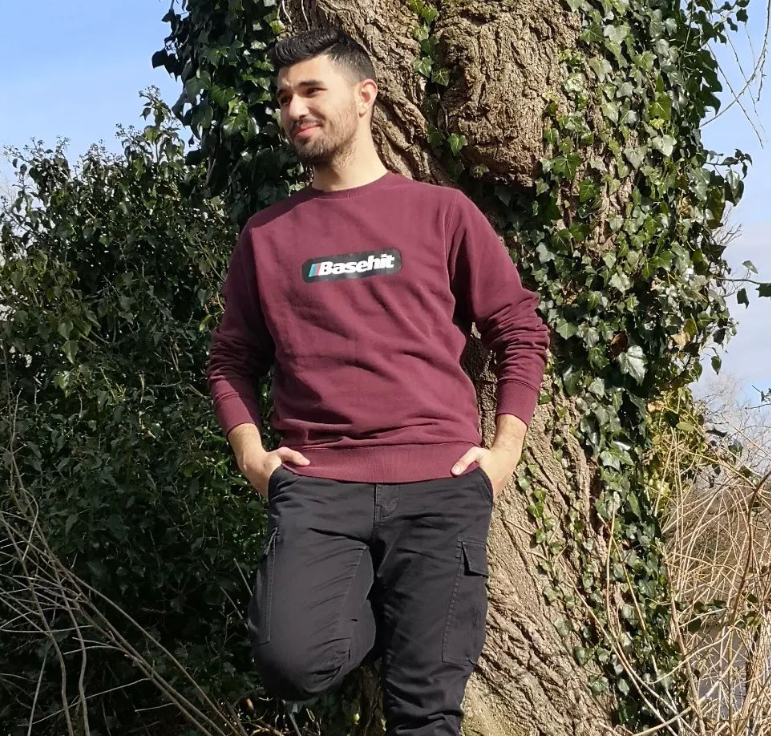

Χρήστος Ρούσας
Ο Χρήστος Ρούσας, συνιδρυτής του Take A Byte, είναι φοιτητής στο Οικονομικό Πανεπιστήμιο Αθηνών, όπου και διανύει το 4ο έτος των σπουδών του στην Πληροφορική. Του αρέσει η Θεωρία Παιγνίων, η Επιχειρησιακή Έρευνα, και τα μαθηματικά γενικότερα. Στον ελεύθερό του χρόνο, ασχολείται με τη μουσική, παίζοντας κιθάρα και πιάνο, και με τη γυμναστική.
Ιωάννης Μαστρογιάννης
Ο Ιωάννης Μαστρογιάννης, συνιδρυτής του Take A Byte, είναι φοιτητής στο Οικονομικό Πανεπιστήμιο Αθηνών, όπου και διανύει το 4ο έτος των σπουδών του στην Πληροφορική. Θέλει να ασχοληθεί με τα βιντεοπαιχνίδια και τη μουσική.